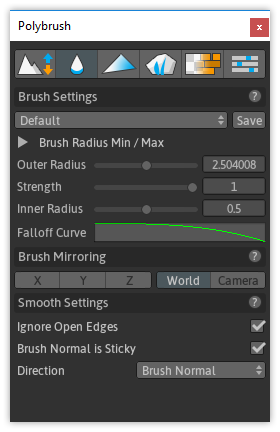

Modes define how a brush interacts with a mesh. Some move vertices around, others apply values per-vertex (like color).
- To enter a Brush Mode click on the toolbar button.
- To exit a Brush Mode, click on the active mode button, or select any standard Unity tool (ie, Move, Rotate, Scale)
You can tell if a Brush Mode is on by it's button in the toolbar- the active mode will appear with a dark blue accent. For example, the Smoothing Mode is activated in the below image:

The available modes are:
| Mode Name | Description | |
|---|---|---|
| Sculpt | Move vertex positions in a direction. | |
| Smooth | Smooth the differences between vertex positions. | |
| Vertex Color | Paint mesh colors. | |
| Texture Blend | Paint mesh textures. | |
| Prefab Placement | Place/scatter detail meshes. | |
| Settings | General Polybrush settings. |